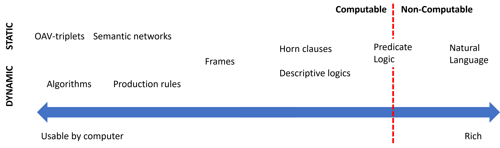
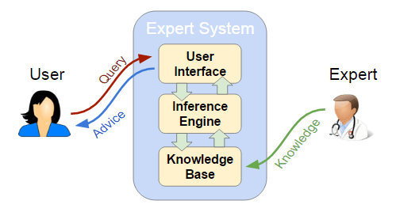
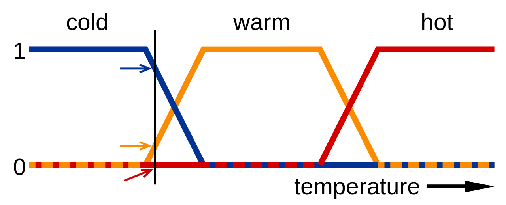
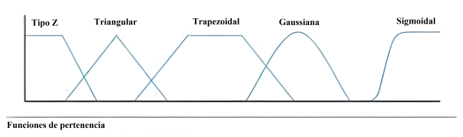
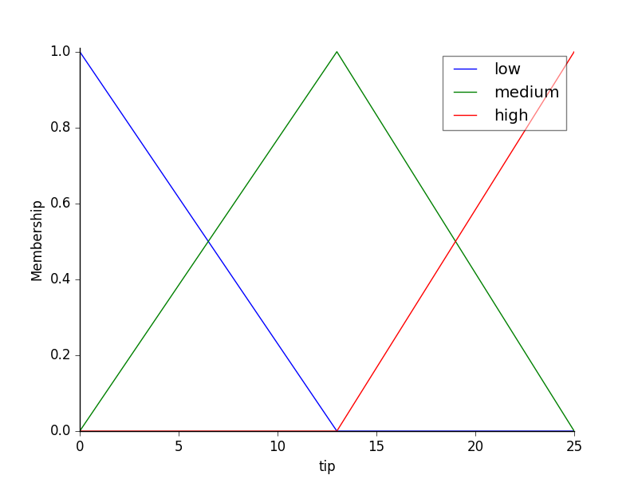

UD02: Sistemas Basados en el Conocimiento¶
Modelos de Inteligencia Artificial¶
version: 2025-11-18¶
¿Qué veremos?¶
- IA Simbolica
- Sistemas Expertos
- Sistemas híbridos Reglas/Datos
- Sistemas de razonamiento impreciso
Inteligencia artificial simbólica¶
- IA simbólica o IA basada en conocimiento:
- Extraemos conocimiento de expertos y lo representamos de una forma que las máquinas puedan entender.
- Utilizamos este conocimiento para:
- Resolver problemas automáticamente.
- Explicar el razonamiento de la máquina.
- Aprender nuevas cosas.
- Mejorar el conocimiento existente.
Representación del conocimiento¶
- Conocimiento vs datos vs información:
- Datos: Hechos o valores.
- Información: Datos con significado.
- Conocimiento: Información con significado y estructura.
El conocimiento es un conjunto de información estructurada e interrelacionada que permite a un agente realizar tareas.
Jerarquía del conocimiento (I)¶
- Muchas veces definimos el conocimiento en relación a conceptos similares.
- La jerarquía del conocimiento o jerarquía de DIKW es un modelo que muestra la relación entre datos, información, conocimiento y sabiduría.

Jerarquía del conocimiento (II)¶
-
Datos (**D**ata): Hechos o valores registrados en un soporte físico. Es independiente del agente y puede ser interpretado de diferentes maneras.
-
Ejemplo: "Un reloj inteligente registra la temperatura corporal de la persona."
-
Información (**I**nformation): Es como los datos son interpretados por un agente. Es subjetiva y depende del agente.
- Ejemplo: "La temperatura corporal de la persona es 37ºC"
Jerarquía del conocimiento (III)¶
-
Conocimiento (**K**nowledge): Es información integrada en nuestro modelo del mundo. Depende del agente y de sus conocimientos previos.
-
Ejemplo: "Si la temperatura es superior a 37ºC, entonces la persona tiene fiebre"
-
Sabiduría (**W**isdom): Representa el meta-conocimiento: conocimiento sobre cómo y cuándo aplicar el conocimiento.
- Ejemplo: "Si la persona tiene fiebre, entonces debe tomar paracetamol"
Representación del conocimiento (I)¶
- Es la forma en la que representamos el conocimiento para que las máquinas puedan entenderlo.
- Es uno de los problemas fundamentales de la inteligencia artificial.
- Se debe representar de forma que:
- Sea entendible para las máquinas.
- Sea útil para resolver problemas.
- Sea eficiente para ser procesado por las máquinas.
Representación del conocimiento (II)¶
- Podemos ver las diferentes representaciones como un continuum:
- A la izquierda tenemos las representaciones más simples (algoritmos); utilizables por los ordenadores de forma eficiente pero muy poco flexibles.
- A la derecha tenemos las representaciones más flexibles (texto natural); muy potentes pero no utilizables directamente por las máquinas.
Continuum del conocimiento¶

Representación del conocimiento (III)¶
- Representaciones de red:
- En la mente humana el conocimiento se representa como una red de conceptos interrelacionados.
- Las representaciones de red intentamos hacer lo mismo en un grafo dentro de los ordenadores.
- Las llamamos redes semánticas.
- Existen diferentes tipos: Pares de atributos y valores, representaciones jerárquicas, representaciones procedurales, lógica, etc.
Pares de atributos y valores o tripletes objeto-atributo-valor¶
- Aprovechamos que un grafo se puede representar como una lista de nodos y aristas para representar el conocimiento.
- El conocimiento se representa como una lista de pares de atributos y valores.
- "El perro es un animal, el perro tiene cuatro patas, el perro tiene pelo, el perro tiene cola, etc."
- "La paloma es un animal, la paloma es un pájaro, la paloma tiene dos patas, etc."
- "El coche es un vehículo, el coche tiene cuatro ruedas, el coche tiene un motor, etc."
Representaciones jerárquicas¶
- El conocimiento se representa como un árbol.
- Los nodos del árbol representan conceptos.
- Las aristas representan relaciones entre conceptos.
- Animales \(\rightarrow\) Vertebrados \(\rightarrow\) Mamíferos \(\rightarrow\) Perros \(\rightarrow\) Caniche
- Animales \(\rightarrow\) Vertebrados \(\rightarrow\) Pájaros \(\rightarrow\) Palomas \(\rightarrow\) Paloma común
- Objetos \(\rightarrow\) Vehículos \(\rightarrow\) Coches \(\rightarrow\) Coche de gasolina
Representaciones procedurales¶
- El conocimiento se representa como un conjunto de acciones que pueden realizarse cuando se dan ciertas condiciones.
- Llamamos reglas de producción a las declaraciones que nos permiten obtener conclusiones a partir de ciertas premisas.
- Son de la forma: IF (premisa) THEN (conclusión)
- IF (la temperatura es superior a 37ºC) THEN (la persona tiene fiebre)
- IF (la persona tiene fiebre) THEN (la persona debe tomar paracetamol)
Lógica¶
- La lógica es un sistema formal que nos permite representar el conocimiento y razonar sobre él propuesta por Aristóteles hace más de 2000 años como herramienta para la deducción.
- La lógica proposicional es un sistema formal que nos permite representar el conocimiento y razonar sobre él. Muy potente a nivel teórico pero no directamente utilizable por las máquinas; un subconjunto es utilizable en sistemas como prolog.
- Ej: \(p\): "La persona tiene fiebre", \(q\): "La persona debe tomar paracetamol"
- \(p \rightarrow q\): "Si la persona tiene fiebre, entonces la persona debe tomar paracetamol"
- \(p \land q\): "La persona tiene fiebre y la persona debe tomar paracetamol"
2. Sistemas Expertos¶
- Los sistemas expertos son una aplicación de la inteligencia artificial.
- Los sistemas expertos comenzaron su desarrollo en la década de 1970.
- Se considera que los primeros sistemas que fueron capaces de obtener resultados con utilidad práctica.
- Basados fundamentalmente en reglas.
- imprescindible disponer del conocimiento de un especialista en el campo objeto de estudio.
Todo sistema experto ha de tener la capacidad de explicar cuál es la decisión que ha tomado.
2. Estructuras elementales de los sistemas expertos¶
- La arquitectura... basado en reglas del tipo: «SI ... ENTONCES»
- Cada regla representa una porción del conocimiento que se pretende introducir en el sistema.
- Un conjunto de reglas relacionadas puede llevar de una serie de hechos y datos conocidos hasta algunas conclusiones de utilidad.
Todo sistema experto está formado por los siguientes elementos:

3.Dinámica de un sistema experto.¶
- En un programa informático, la lógica está incrustada en un código que,solo puede ser revisado por un especialista informático.
- En un sistema experto, el objetivo era especificar las reglas en un formato que fuera intuitivo y fácil de entender, revisar e incluso editar por expertos en el dominio en lugar de expertos en TI.
- Un sistema experto debe ser capaz de generar información no explícita, razonando con los elementos que se le dan.
- Un sistema experto puede actuar como un intermediario inteligente que guía y apoya el trabajo del usuario final.
Mecanismos de razonamiento.¶
- Encadenamiento hacia delante: se parte de hechos para llegar a resultados.
- Encadenamiento hacia atrás: se parte de los resultados y se trata de encontrar o volver a los hechos.
- Encadenamiento mixto: combina los anteriores.
- Algoritmo de búsqueda heurística: el proceso de inferencia es una búsqueda en una estructura de tipo árbol.
- Herencia: usado en entornos de programación orientada a objetos. Un objeto hijo hereda propiedades y hechos de los padres.
Encadenamiento hacia adelante y hacia atrás¶
Para obtener conclusiones...¶
- Modus Ponens "si P implica Q; y si P es verdad; entonces Q también es verdad."
- Modus Tollens "Si P implica Q, y Q no es cierto, entonces P no es cierto"
Así como ver este vídeo corto en el que se hace un planteamiento sencillo de los conceptos.
Sistemas híbridos Reglas/Datos (II)¶
Librerías¶
- Human-Learn: Permite definir y dibujar reglas que se pueden mejorar con el aprendizaje automático.
- skope-rules: Analitza les dades i dedueix regles per a classificar.
- Permite analizar las reglas para mejorarlas e interpretarlas.
- SpaCy:
- Permite definir reglas para extracción de información para textos.
- Útil en casos donde no se dispone de suficientes datos etiquetados o por casos específicos.
Sistemas de razonamiento impreciso¶

Definición¶
- Lògica difusa o lògica borrosa: – Extensión de la lógica proposicional para trabajar con la incertidumbre.
- Permite trabajar con valores imprecisos.
- Sistemas de razonamiento impreciso:
- Sistemas basados en reglas que utilizan la lógica difusa.
- Permiten trabajar con valores continuos.
- Facilitan modelar el conocimiento humano.
- Muy apropiados para sistemas de control
- Nos permiten tener una buena solución, si no la mejor.
Lógica difusa (I)¶
- La lógica proposicional es binaria.
- Un enunciado es cierto o falso.
- La lógica difusa permite trabajar con valores continuos.
- Un enunciado puede ser cierto y falso en un grado parcial.
- Los valores de verdad son números reales en el intervalo \([0, 1]\).
- \(0: Falso\), \(1: Cierto\), \(0.5:\) \(Cierto\) al \(50\%\)
- La pertenencia de un elemento a un conjunto vendrá dada por una función de pertenencia.
- \(\mu_A(x)\): Grado de pertenencia de \(x\) al conjunto \(A\).

Lógica difusa (II)¶
- La lógica difusa facilita la representación del conocimiento humano.
- Los humanos no razonamos en términos binarios.
- Los humanos no tenemos un conocimiento preciso ni completo.
- Conceptos como \(húmedo\) o \(frio\) son difíciles de definir con precisión.
- La lógica difusa nos permite definirlos con funciones de relevancia.
- El poder trabajar con estos conceptos facilita la creación de dispositivos como secadores o termostatos.
- "Si la temperatura es fría, entonces enciende la calefacción"
Conceptos básicos (I)¶
- Variable lingüística: Variable que puede tomar valores lingüísticos.
- Ejemplos: \(Temperatura\)
- Valores lingüísticos: Valores que puede tomar una variable lingüística.
- Ejemplo: \(Frio, Calor\)
- Función de pertenencia: Función que asigna a cada valor de una variable lingüística un grado de pertenencia a un valor lingüístico.
- Ejemplo: \(Temperatura = 27^oC \rightarrow Calor = 0,8\, Mucho Calor = 0,2\)
Conceptos básicos (II)¶
- Regla difusa: Regla que utiliza valores difusos.
- Ejemplo: "Si la temperatura es fría, entonces calefacción alta"
- Función de agregación: Función que combina los valores difusos de las reglas para deducir la conclusión final.
- Exemple: \(Calor = 0.8, Humedad = 0.7 \rightarrow Sensacion\:desagradable = 0.8\)
- Sistema de razonamiento impreciso:
- Sistema basado en reglas que utiliza la lógica difusa.
- Ejemplo: Sistema de control de temperatura de una casa.
Funcionamiento de los sistemas de razonamiento impreciso (I)¶
- Fuzzyficación:
- Conversión de los datos de entrada precisos a valores difusos.
- Pasamos de valores precisos a valores difusos.
- Utiliza las funciones de pertenencia.
- Asigne a cada valor de entrada un grado de relevancia para cada variable de idioma
- \[27^oC \rightarrow Calor = 0.8, Mucha\:calor = 0.2\]
Funcionamiento de los sistemas de razonamiento impreciso (II)¶
- Evaluación de las reglas:
- En este paso se aplican las reglas del sistema.
- Se establece la relación entre las variables de entrada y las variables de salida.
- "Si la temperatura es alta y la humedad es baja, entonces la velocidad del ventilador debe ser alta"
- Se combinan las funciones de relevancia de las variables de entrada
- deducir la relevancia de la variable de salida.
Funcionamiento de los sistemas de razonamiento impreciso (III)¶
- Desfuzzyficación:
- Conversión de los datos de salida difusos a valores precisos.
- Pasamos de valores difusos a valores precisos.
- Utiliza las funciones de agregación.
- Combina las conclusiones de las reglas para deducir la conclusión final.
- Se suele utilizar la función de centro de gravedad o máximo.
Funciones de relevancia (I)¶

- Las más utilizadas son las funciones trapezoidales y las funciones triangulares.
- Las sinusoidales son útiles para representar periodos.
- Las sigmoidales son útiles para representar probabilidades.
Ejemplo: Propinas (I)¶
Variables d'entrada¶
Utilizaremos funciones triangulares para representar las variables de entrada y salida
- Servicio:
- Bajo: \([0, 5]\)
- Media: \([0, 10]\)
- Alta: \([5, 10]\)
- Calidad de la comida:
- Mala: \([0, 5]\)
- Medio: \([0, 10]\)
- Buena: \([5, 10]\)

Ejemplo: Propinas (II)¶
Variables de salida¶
- Propina:
- Baja: \([0, 13]\)
- Media: \([0, 25]\)
- Alta: \([13, 25]\)

Ejemplo: Propinas (III)¶
Reglas**¶
- IF (Calidad del servicio es baja o Comida es mala) THEN (Propina es baja)
- IF (Calidad del servicio es media) THEN (Propina es media)
- IF (Calidad del servicio es alta o Comida es buena) THEN (Propina es alta)

Ejemplo: Propinas (IV)¶
Inferencia¶
- Calidad del servicio: 9.8
- Calidad de la comida: 6.5
- Propina: 19,24 €